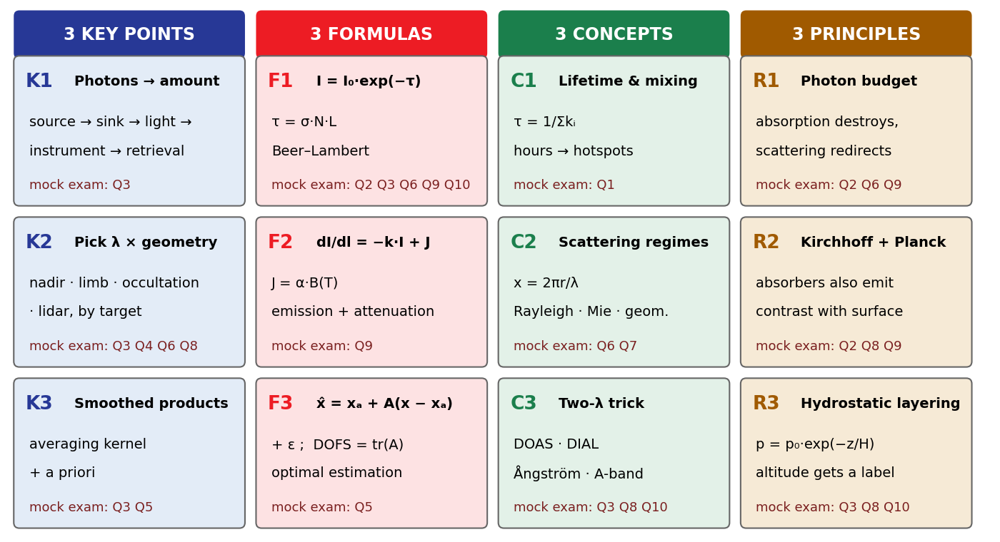
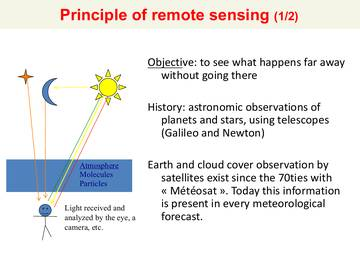
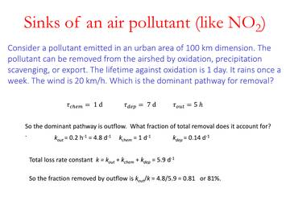
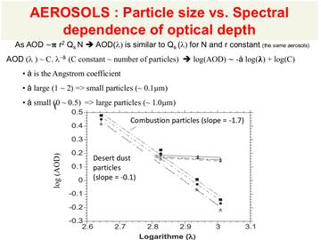

Home › Start here · The Big 12
The course looks wide (atmosphere, chemistry, radiative transfer, retrieval, aerosols, lidar), but almost every exam question is built from twelve ideas: 3 key points, 3 formulas, 3 concepts and 3 principles. Learn them in this order before the modules and before the mock exams. On the five written papers of this site the Big 12 gives the skeleton of 95% of the 122 parts and the complete answer of 61%; on the official sample (Paper 1) the figures are 93% and 53%. These percentages are my own assessment of each part, not a promise about the real exam.
The Big 12 on one page
Twelve ideas, in four groups of three. Each card in the next section gives the statement, a 20-second explanation and the most common trap. The figure shows which questions of the official mock exam use each item.

How to use this page: (1) read the 12 cards once (15 minutes); (2) take the 12-question check at the bottom and reach 10/12; (3) only then go to Part A, Part B and the chapters; (4) do the mock papers; use the A/B/C tags in the exam to see which part relies on the Big 12 alone.
The 12 cards
Each card says what it is, how to say it in 20 seconds, the typical trap, and where to go deeper.
Key points — what the course is about
K1From photons to concentration
We never measure a concentration. We measure light that crossed the atmosphere. The whole course is one chain: sources and sinks (lifetime) → light–matter interaction (absorb, scatter, emit) → instrument and geometry → retrieval (inverse problem) → interpretation (sensitivity, validation).
In 20 seconds: A sensor records radiance. The radiative transfer equation links radiance to the amount of gas or aerosol on the path. Retrieval inverts that link, and the answer always carries the instrument’s sensitivity.
Typical trap: Treating a retrieved number as the truth: it is an estimate x̂ built from the measurement and an a-priori.
Go deeper: M1 · Sinks & lifetime · M2 · Light–matter interaction · M3 · Trace-gas retrieval
K2Pick the tool by the target
Wavelength, geometry and platform decide what you can see. UV–visible nadir: columns of NO₂, O₃, HCHO, aerosol, km-scale maps. Thermal IR nadir: CO, O₃, dust, day and night, needs thermal contrast. Limb / occultation: stratospheric profiles, high vertical resolution, coarse horizontal. Lidar: vertical profile of aerosol and cloud along one line.
In 20 seconds: There is always a trade-off: vertical versus horizontal resolution, global coverage versus sensitivity near the surface, passive (wide swath, no height) versus active (height, narrow curtain).
Typical trap: Giving a tool without the reason. Always say why (resolution, calibration, coverage, contrast).
Go deeper: M4 · Pointing geometries · M6 · Passive aerosol sensing · D · Active sensing: lidar
K3Every product is a smoothed estimate
A retrieved profile is the a-priori plus a smoothed version of the truth. The averaging kernel A tells you where the instrument sees (rows), its vertical resolution (width) and the DOFS = trace(A) (number of independent pieces of information). The air mass factor inherits the same dependence on the assumed profile.
In 20 seconds: Before using a satellite product say: how many independent layers (DOFS), at what altitude is it most sensitive, and how much of it comes from the a-priori?
Typical trap: Comparing a model profile directly with a satellite retrieval. Smooth the model first with the averaging kernels.
Go deeper: M3 · Trace-gas retrieval · M5 · Averaging kernels · C · Satellite case studies
Formulas — the maths you must be able to write
F1Beer–Lambert: I = I₀·e^(−τ)
τ = ∫ kext ds = σ·N·L, transmittance t = e−τ, slant path τ/cos θ. The same law gives AOD, the Ångström exponent (τ ∝ λ−α), DOAS (D = σ′·SCD), the slant-column AMF, and the lidar transmission (T²: the pulse goes and comes back).
In 20 seconds: Light is attenuated exponentially with optical depth; σ comes from spectroscopy, L from geometry, so measuring τ gives the unknown N.
Typical trap: Units (1 km = 10⁵ cm), forgetting 1/cos θ, using one-way T in the lidar equation, writing e+τ.
Go deeper: A · Core knowledge toolbox · M2 · Light–matter interaction · M6 · Passive aerosol sensing · D · Active sensing: lidar
F2RTE: dI/dl = −k_ext·I + J
Extinction (absorption + scattering) removes photons; the source function J adds them. Without scattering, in LTE: J = α·B(T) and I(L) = I(0)·e−τ(0,L) + ∫ B(T(l))·e−τ(l,L) dτ with the surface term I(0) = εsB(Ts) + (1 − εs)Is. Transparent gas (τ ≪ 1): I ≈ I(0) + τB; opaque gas: only the top layers are seen.
In 20 seconds: The signal at the sensor is the attenuated background plus the attenuated emission of every layer; the factor e^(−τ(l,L)) is the weighting function of altitude.
Typical trap: Forgetting that the emission of a layer is itself attenuated by the gas above it.
Go deeper: A · Core knowledge toolbox · M2 · Light–matter interaction · M8 · Aerosol altitude
F3Retrieval: x̂ = xₐ + A(x − xₐ) + ε
Minimise J(x) = [y − F(x)]ᵀSy⁻¹[y − F(x)] + [x − xa]ᵀR[x − xa] (ill-posed → constraint). Linearised: x̂ = xa + A(x − xa) + Gε, A = GK = ∂x̂/∂x, DOFS = tr(A). Model comparison: xm,s = xa + A(xm − xa).
In 20 seconds: K (Jacobian) says how the spectrum reacts to the profile; G inverts it with a constraint; A says how the true profile is smoothed into the retrieval.
Typical trap: Believing A is the identity: rows broader than a layer mean poor vertical resolution; row sum < 1 means a-priori contribution.
Go deeper: M3 · Trace-gas retrieval · M5 · Averaging kernels · C · Satellite case studies
Concepts — the ideas you must be able to explain
C1Lifetime and mixing
τ = burden / loss rate = 1/k′. Parallel sinks add as rates: 1/τ = Σ 1/τi; the dominant sink is the one with the largest k. Short-lived species (NO₂, hours to 1 day; SO₂) trace their sources as hotspots; long-lived species (CO ≈ 2 months, CH₄ ≈ 10 years) are well mixed and show small variations. Plume e-folding length L = U·τ.
In 20 seconds: Compare the lifetime with the mixing time: shorter than transport → local map of sources; much longer → uniform field.
Typical trap: Adding lifetimes instead of rates; forgetting to convert seconds to days (5×10⁶ s ≈ 58 d).
Go deeper: M1 · Sinks & lifetime · B · Atmosphere & ozone chemistry
C2Scattering regimes (size parameter)
x = 2πr/λ. Rayleigh (x ≪ 1, molecules): σ ∝ λ⁻⁴, symmetric phase function, blue sky (400 nm is ≈ 7 times 650 nm). Mie (x ≈ 1): aerosols, forward peak, α ≈ 0–2. Geometric (x ≫ 1, droplets, crystals): Q → 2, independent of λ, white clouds. Ångström α ≈ 1–2 fine, 0–0.5 coarse.
In 20 seconds: Compare the particle size with the wavelength. That one number explains the colour of the sky, the colour of clouds and why dust and smoke have different AOD spectra.
Typical trap: Mixing radius and diameter; calling a 0.2 µm sulfate particle “Rayleigh”.
Go deeper: M7 · Scattering regimes · M6 · Passive aerosol sensing · M2 · Light–matter interaction
C3The two-wavelength trick
Whenever something is unknown, use a difference or a ratio of two wavelengths so it cancels: DOAS (σ = σb + σ′, polynomial removes broadband), DIAL (ON/OFF line), Ångström (τ(λ₁)/τ(λ₂)), AAI (UV pair), O₂ A-band (in-band versus continuum).
In 20 seconds: What the target changes quickly with wavelength is the fingerprint; everything that changes slowly (Rayleigh, aerosol, surface) is absorbed by a polynomial or cancelled in the ratio.
Typical trap: Forgetting the broadband polynomial in DOAS; using ON only in DIAL.
Go deeper: A · Core knowledge toolbox · M3 · Trace-gas retrieval · M6 · Passive aerosol sensing · M8 · Aerosol altitude · D · Active sensing: lidar
Principles — the laws behind everything
R1Photon budget
Along the line of sight gains are surface reflection, single and multiple scattering into the beam, and thermal emission; losses are absorption and scattering out of the field of view. Absorption destroys the photon; scattering only redirects it.
In 20 seconds: Every RTE term is either an income or an expense of photons on the path to the sensor.
Typical trap: Saying scattering “destroys” light; forgetting multiple scattering in clouds and thick aerosol.
Go deeper: A · Core knowledge toolbox · M2 · Light–matter interaction
R2Kirchhoff and Planck
In local thermodynamic equilibrium ελ = αλ: what absorbs also emits, with the Planck function B(λ,T). Wien: λmax = 2898/T (Sun ≈ 0.5 µm, Earth ≈ 10 µm); Stefan: M = σT⁴. A thermal signal exists only where the layer is at a different temperature from its background.
In 20 seconds: Thermal IR carries both concentration and temperature information, and needs thermal contrast: a cold, high layer shows up; a layer as warm as the surface is invisible.
Typical trap: Saying a dust layer at 1 km gives a larger brightness-temperature depression than one at 5 km with the same AOD.
Go deeper: M2 · Light–matter interaction · M8 · Aerosol altitude · A · Core knowledge toolbox
R3Hydrostatic layering
p = p₀·e−z/H, H = RT/(Mg) ≈ 8 km: pressure halves every ≈ 5.75 km (H ln 2). Temperature falls ≈ 6.5 K/km in the troposphere. Consequences: Lorentz line width ∝ p (altitude information in the line wings), O₂ is well mixed (A-band measures photon path), thermal contrast grows with height, air density sets lidar molecular backscatter.
In 20 seconds: Pressure, density and temperature change with altitude in a known way, so altitude leaves a signature in the spectrum.
Typical trap: Using an isothermal atmosphere for temperature-contrast questions (it gives 304 hPa at 10 km instead of the real 265 hPa).
Go deeper: B · Atmosphere & ozone chemistry · A · Core knowledge toolbox · M8 · Aerosol altitude
How well do the 12 ideas cover the exams?
Every sub-question of the five written papers was tagged with the Big-12 items it needs and a level: A the Big 12 alone gives the full answer, B the Big 12 gives the skeleton but module facts (a number, a name, an instrument) are needed, C module-specific. Counting all 122 parts of Papers 1–5:
| Level | Parts | Share |
|---|---|---|
| A — complete from the Big 12 | 74 | 61% |
| B — skeleton + module facts | 42 | 34% |
| C — module-specific | 6 | 5% |
| A + B — the Big 12 is present | 116 | 95% |
Most-used items across the papers: F1 (29), K2 (19), C2 (17), K3 (15), C3 (13).
Official Paper 1: which item serves which question
| K1 | K2 | K3 | F1 | F2 | F3 | C1 | C2 | C3 | R1 | R2 | R3 | |
|---|---|---|---|---|---|---|---|---|---|---|---|---|
| Q1 | A | |||||||||||
| Q2 | A | A | A | |||||||||
| Q3 | B | B | B | B | B | B | ||||||
| Q4 | B | |||||||||||
| Q5 | A | A | ||||||||||
| Q6 | B | A | A | B | ||||||||
| Q7 | A | |||||||||||
| Q8 | C | B | B | B | ||||||||
| Q9 | A | A | A | A | ||||||||
| Q10 | A | A | A |
Green A = a part of the question can be answered completely from that item; yellow B = the item gives the skeleton and module facts are needed; red C = module-specific detail with the item only as a frame.
Suggested route
- Hour 0 — Start here: read the 12 cards, pass the check (10/12).
- Part A and Part B: radiative transfer, optical depth, line profiles, DOAS; atmosphere, sinks, ozone chemistry.
- Chapters 1–4: sinks, light–matter, trace-gas retrieval, geometries.
- Chapters 5–8: averaging kernels, passive aerosol, scattering regimes, aerosol altitude.
- Part C and Part D: satellite case studies and lidar (new lecture material).
- Mock exams: Paper 5 (drill) → Paper 2 → Paper 3 → Paper 4 → Paper 1 (official, timed). Self-grade with the answer keys.
Lecture slides for this module (Cuesta master course)
8 pages of the lecture “Remote Sensing of the Atmosphere: a focus on air composition” (J. Cuesta, UPEC). Page numbers refer to the lecture PDF. Click a page to enlarge; browse all pages.








Exam checklist — points you must mention
- I can say the chain K1 in one sentence and give the reason for the tool choice K2.
- I can write F1, F2, F3 from memory and define every symbol.
- I can compute τ, t, the lifetime of parallel sinks, x = 2πr/λ and DOFS with a calculator.
- I can explain why lifetime sets the map pattern (C1), why x sets the colour of sky and clouds (C2), and why two wavelengths cancel the unknowns (C3).
- I can state R1, R2, R3 and one consequence of each.
- I scored at least 10/12 on the Big 12 check.
- Mười hai ý cốt lõi: 3 điểm chính (K), 3 công thức (F), 3 khái niệm (C), 3 nguyên lý (R).
- K1 chuỗi từ photon tới nồng độ; K2 chọn công cụ theo mục tiêu; K3 sản phẩm luôn bị làm trơn (AK, a priori).
- F1 Beer–Lambert (τ = σNL); F2 RTE (J = αB); F3 x̂ = xₐ + A(x − xₐ) + ε.
- C1 thời gian sống và trộn lẫn; C2 chế độ tán xạ theo x = 2πr/λ; C3 mẹo hai bước sóng (DOAS, DIAL, Ångström).
- R1 cân bằng photon; R2 Kirchhoff + Planck; R3 phân tầng thủy tĩnh p = p₀e^(−z/H).
Practice calculations
These tools run in your browser and are checked against Python:
Optical depth and transmission Lifetime and parallel sinks Size parameter Averaging kernel and DOFS
Lecture slides (12 slides; use ← → keys or the buttons)
Big 12 check — reach 10/12 (12 of 20 questions)
Open the full bank: 20 multiple-choice + 3 essay questions →